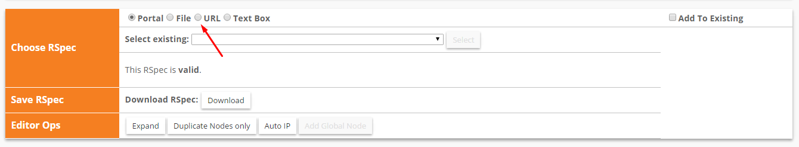
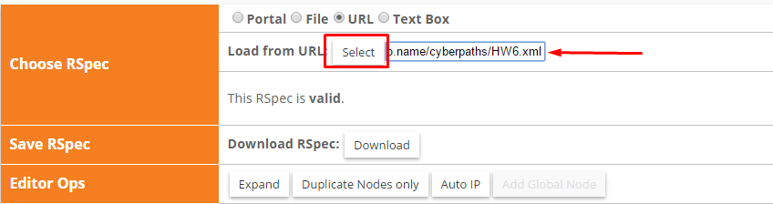
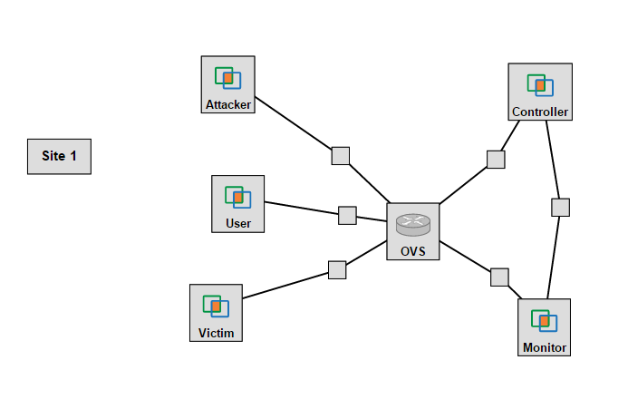
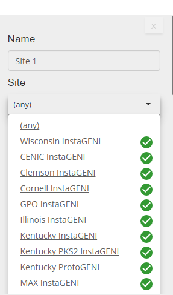
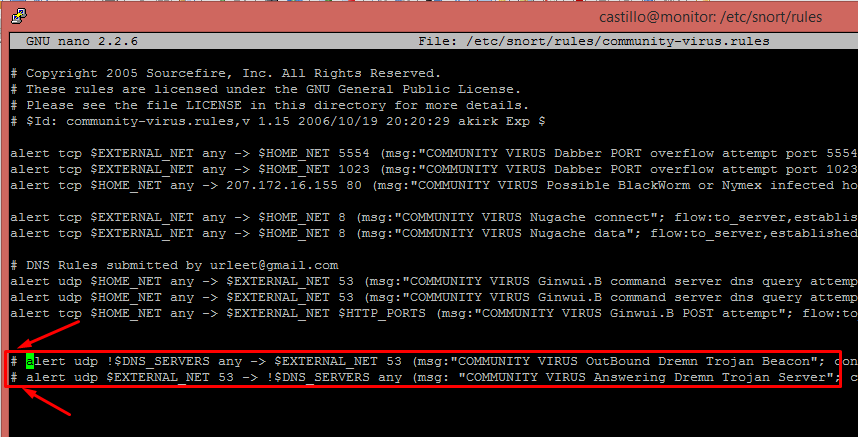
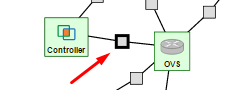
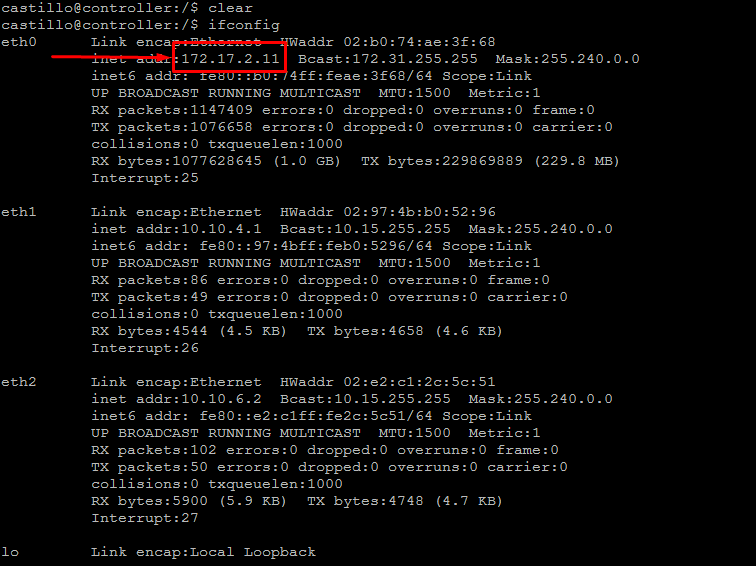

- Intrusion Detection Systems Lab (Hard) -
Lab Goals
- To get you acquainted with different Intrusion Detection Systems (IDSs)
- To install an IDS on a real machine on GENI
- To use the IDS to detect Distributed Denial of Service Attacks
- To create and study IDS rules
- To study IDS logs and understand them
Quick introduction to Software Defined Networks (SDN)
This lab is using a powerful network architecture, Software Defined Networking (SDN). SDN is a flexible, agile, and fully programmable network paradigm. Openflow is the framework that offers this standardization and programmability for the software swiches that are used in SDN architectures.
In the SDN architecture the network and control plane are separated, offering a logically centralized controller that can be easily programmable
and as you can see in the lab that follows can instruct the Openflow Virtual Switch to duplicate the traffic that goes to the victim to another machine called the monitor. This is pretty powerful, duplicating traffic that goes through a switch to a monitor, dedicated machine, and decentralizing the monitoring of the network for attacks.
The following videos give a good introduction on SDN and Openflow:
Prerequisites
- You will need basic command line knowledge to complete this lab. Codecademy has a great tutorial on this topic.
- In this lab, you will implement a computer network attack, Denial of Service (DoS). This attack is designed to deprive services, such as web content, from legitimate users. From Wikipedia: "In computing, a denial-of-service attack is a cyber-attack where the perpetrator seeks to make a machine or network resource unavailable to its intended users by temporarily or indefinitely disrupting services of a host connected to the Internet." You can watch a video about this attack and read more about recent DDoS attacks using the Internet of Things interconnected devices.
- To analyze the computer network traffic from this attack, we will use tool called Wireshark. Here is a quick video tutorial for this tool.
- Iperf is a tool that is used through command line to generate computer network traffic that resembles regular usage of a computer network. You can read more about this tool here.
- Hping3 is another computer networking tool that you will use. This tool, with the proper command line options, can generate a flood of computer network traffic that can overwhelm and take over networking resources. You can read more about this tool here.
- Snort is an Intrusion Detection System that alerts about computer network attacks by crossckecking their characteristics against a database of attack signatures. You can learn more about Snort by reading the original publication and the manual.
Part 1: Setting up the topology
- Create a new slice under the corresponding project
- Click the "Add Resources" button located in the page of your newly created slice
- Click the URL option

- Paste on the input box the following link: http://mountrouidoux.people.cofc.edu/CyberPaths/files/IDS_Lab_Hard_rspec.txt
- Then click on the "Select" button

- Your topology should now load and look like similar to this

- Now click on "Site 1" and select one of aggregates on the left that is available and then reserve the resources

- Then wait some time until all your resources are ready, you can check the status of these by going to the page of your slice. If the background color of a given node is grey, it means that such node is not available yet; if it is green, it means that it is ready. Just like so:

Part 2: Setting up your nodes; Node: Controller
- Now that your topology resources were reserved and you may login to your nodes (For help on how to login to the nodes please refer to one of the previous guides), we need to set up different things in every node. Let's get started with the controller
- The controller is just a regular machine, we need to set it up in order for it to work as a controller for the virtual switch in our topology. To set it up first connect through SSH to the Controller node and execute the following commands:
sudo git clone https://github.com/noxrepo/pox.git
cd pox/ext
sudo wget http://www.gpolab.bbn.com/experiment-support/NFVApps/pox-intro-ctrlapps.tar.gz
sudo tar xvfz pox-intro-ctrlapps.tar.gz
- Having executed the commands on the previous step, the Controller node now has the capability of operating as a controller to the virtual switch (OVS) of your topology. The Controller is the "brain" of the switch and one of the powerful components of the SDN architecture. It can program the switch to do things in real time, easily, such as redirect a flow, drop it, or duplicate it!
Part 3: Setting up your nodes; Node: Monitor
- Now, we must set-up the intrusion detection software (Snort in our case) so the Monitor node acts like an Intrusion Detection System (IDS) in our topology
- Connect to the Monitor node in your topology and execute the following command to install snort:
sudo apt-get install snort -y
- At some point during the installation of snort you will be asked for a home network range. Enter: 10.10.0.0/16. This is the mask applied to the machines in the network of the topology.
- The final change to be applied to the Monitor to finish the IDS set-up is turning into comments the lines 19 and 20 of the community-virus rules of the IDS by adding pound signs (#) in front of the lines. To do that execute the following command:
sudo nano /etc/snort/rules/community-virus.rules
- On the editor count until you reach line 19 and comment it out, same for line 20. It should look like this:

- Press "Ctrl + X" to finish editing
- Enter: Y when prompted
- Press Enter; to leave the same name for the file
- Now we are done setting up the Monitor!
- Think about what you just did and answer the following questions:
- What is the purpose of Snort IDS?
- Why do we need to add a home network range?
Part 4: Setting up your nodes; Node: OVS
- Now we need to set-up the last node, the open virtual switch. This switch relays packets like a regular switch but it is also highly programmable using the OpenFlow framework! Login to your OVS node
- You need to execute the following commands to set up the OVS:
sudo ovs-vsctl add-br br0
ifconfig
- After you run "ifconfig", you should see several interfaces listed, like eth0, eth1, eth2 ... You need to figure out which interface corresponds to the controller. To do that go to the GENI page for your slice and click on the grey node between the OVS and Controller; Just like so:

Now on the left of the resource viewer you should see "Interface to OVS" and then see an IP address, match this one with one of the IPs shown after running "ifconfig":
Now, since the IP matched with the one in eth4, it means that the interface corresponding to the controller, in my case, eth4
- For every "eth" interface, except eth0 and the interface for the controller, execute the following command:
sudo ovs-vsctl add-port br0 eth<Number>
- The command above should have been executed 4 times in total for the different interfaces, remember not eth0 or the controller's interface(eth4, in my case)
- On the controller terminal execute:
ifconfig
The IP located on eth0 will be the IP of the CONTROLLER. In my case it is 172.17.2.11

- Now go back to the swich node named OVS. Execute on the OVS node the following command using the Controller's IP (The one we figured out in the previous step, 172.17.2.11 in my case):
sudo ovs-vsctl set-controller br0 ptcp:6634 tcp:<CONTROLLER'S IP>:6633
sudo ovs-vsctl set-fail-mode br0 secure
- Trust but verify!
- You will need to verify if the traffic is duplicated to the monitor. How can you do this? Hint: a tool that records network traffic may be useful. Describe your methodology and commands that you have used. Include screenshots.
- If your nodes cannot ping each other, verify if you have done the following:
- Have you started the controller, i.e., the brain of your switch??
- Do all the nodes belong to the same network?? To verify this, log on to all the nodes (attacker, victim, user, monitor). Run ifconfig. Think about networks and subnets. Do all your nodes belong to the same network?
- If they do not belong to the same network, then you will need to use the ifconfig command to fix this problem. The command "sudo ifconfig eth(num) (node_IP) netmask (node_netmask)" will change a specific port's IP address and netmask to node_IP and node_netmask.
- Think about what you just did and answer the following questions:
- What is the OVS (Openflow Virtual Switch)? What does a switch do?
- Why do we need a controller for the switch?
Part 5: Experimenting - Running an Internal Attack
An internal attack means that the attack is coming from machines connected directly to the network switch. We will be running such an attack in order to see how correlation and mitigation takes place on an internal attack.
In order to see the monitor in action, we must first start duplicating traffic using the controller on our topology (the "brain of the switch") to our monitor. This allows our monitor to view the traffic of the network.
- To duplicate the traffic you need to first, figure out the corresponding interface (like eth1, eth2 ...) of the Monitor in the OVS (You can use the GENI topology visualizer and "ifconfig" for this) and then execute the following commands on the Controller to start the duplication:
cd pox
./pox.py --verbose DuplicateTraffic --duplicate_port=<interface on the OVS that corresponds to the monitor>
-
Now to start Snort you need to first figure out the interface of the OVS in the Monitor, you can figure this out by running "ifconfig" on the Monitor and comparing the IPs with the node between the Monitor and OVS, once you have figured out this, execute the following command on the Monitor's terminal:
sudo snort -c /etc/snort/snort.conf -A fast -i <interface on the Monitor that corresponds to the OVS>
- Now, we need to simulate normal traffic on our network to have something to which we can compare the DDoS attack. To simulate traffic on the network we will use iPerf. iPerf requires a Sever and a Client to generate traffic, so we will use the Victim as the Server and the User as the Client to simulate traffic.
To start the server on the Victim execute the following command:
iperf -s
To start the traffic simulation, now we need to make the iperf client start communicating with the Server. We will start a communication that will last two minutes (120 seconds) with the following command on the User:
iperf -c victim -t 120
-
Finally time to run the attack! To run the attack go to the terminal of the Attacker and execute the following command:
sudo timeout -sHUP 20s hping3 -i ul -S --flood --rand-source -p 80 victim
Part 6: Create your own rule!
- Now that you understand what an IDS is and what Snort is for, it is your turn to create your own rule for Snort, your own alert, and then test it.
- The rule you create should be based on what you did on the Part 5 of the tutorial.
- Add your rule at the end of the following file:
/etc/snort/rules/<rule>.rules
- Your alert should have a characteristic message, such as "Dr. X snort alert" and a sequence number that is higher than 10,000 (Numbers lower than 10,000 are reserved and used by Snort)
- Test your alert by running the same DDoS attack you ran earlier. Check the snort alert file to see if your rule worked!
- Things to consider: did you configure the HOME_NET properly? Go to /etc/snort/snort.conf and look for the word "HOME". Then modify this address to apply to your home network.
- Things to consider: Where are the snort log files?? Usually log files in the linux operating system are in the folder:
/var/log/